Click a highlighted definition to read it here without losing your place. Follow section numbers alongside the original PDF.
Before you begin
Read in the PDF: Chapter 3, pp. 97–117. Goal: turn mathematical meaning into a recursive interpreter. Definitions: abstract syntax tree, environment, inference rule.
3.1 Syntactic Structure
This language contains constants, variables, arithmetic, a zero test, conditionals, and local bindings. Each syntax form becomes an OCaml constructor. For example, let x = 1 in x + 2 becomes LET("x", CONST 1, ADD(VAR "x", CONST 2)). The host language is OCaml; the tree is a program in the small language being interpreted.
An expression's outer constructor tells you which semantic rule to use. Its children correspond to that rule's premises. A variable contains a name, not its current value. The environment will supply the value during evaluation.
3.2 Semantic Structure
The semantic domain has integer and boolean values. The judgment ρ ⊢ e ⇒ v says that expression e evaluates to value v in environment ρ. Read it as an input/output contract: the expression and environment are inputs; the result is a language value, represented by an OCaml variant such as Int 3.
An expression may be syntactically valid yet lack a derivation: adding a boolean, using an unbound name, or testing a nonboolean condition are examples. An executable interpreter reports these failures explicitly.
3.2.1 Environment
An environment maps names to values. With an association list, the newest binding is placed first and lookup returns the first matching name. Extending an environment creates a new mapping; it does not change an older mapping used elsewhere.
ρ0 = []
ρ1 = (x ↦ 1) :: ρ0
ρ2 = (x ↦ 2) :: ρ1
lookup x ρ1 = 1
lookup x ρ2 = 2
This is shadowing. The older x still exists in the outer environment but is hidden by the newer x in the inner one. It becomes visible again when evaluation returns to an expression using the outer environment.
3.2.2 Inference Rules
For addition, evaluate both children in the same environment and require integer results. For a conditional, evaluate the condition and then exactly one branch. For let x = e1 in e2, evaluate e1 in the old environment, then e2 in its extension. The name x is not bound by this let inside e1.

View Mermaid source
flowchart TD
accTitle: Chapter 3 - derive the LET evaluator from its rule
accDescr: The right-hand side uses the old environment; only the body sees the new binding.
A["LET x = e1 IN e2, environment rho"] --> B["Evaluate e1 in rho to get v1"]
B --> C["Create rho2 = rho extended with x maps to v1"]
C --> D["Evaluate e2 in rho2"]
D --> E["Return the body's value"]
Trace: let x = 2 in let x = x + 3 in x returns 5. The inner right-hand side reads the outer 2 before the inner binding exists. Evaluating it after extending x would implement a different rule.
3.3 Implementation
Read in the PDF: pp. 114–117. This section already contains a worked interpreter in the PDF. The companion implementation below continues into Chapters 4 and 5, so you can see what changes and what stays the same.
Download the executable interpreter and checks. Run ocaml textbook_functional.ml.
The file's eval e env follows these rules: CONST returns an integer value; VAR looks up a name; arithmetic checks operand shapes; LET extends the environment; IF selects one branch. The unified Chapter 5 syntax uses EQUAL(e, CONST 0) for Chapter 3's zero test.
(* The essential LET branch in the complete evaluator. *)
| LET (x,a,b) ->
let v = go a env in
go b ((x,v)::env)
Worked trace from the chapter
The nested example on p. 117 first binds x to 1 and y to 2. The right-hand side of the final y binding temporarily shadows x with 2, producing 2 + 2 = 4. The final subtraction runs in the outer x scope, with x = 1 and the new y = 4, so it produces -3. The temporary x does not leak out of its own expression.

View Mermaid source
flowchart TD
accTitle: Chapter 3 - keep an inner binding from leaking out
accDescr: The final y receives four, but the final subtraction still uses the outer x equal to one.
A["Outer environment: x=1, y=2"] --> B["Evaluate new y's right-hand side"]
B --> C["Inside that expression only: x=2"]
C --> D["Compute x+y = 4"]
D --> E["Return to outer scope; bind y=4"]
E --> F["x-y = 1-4 = -3"]
Check the interpreter: test an unbound name, nested shadowing, and a conditional whose unchosen branch would fail. A correct conditional must not evaluate both branches.
Homework connection: HW2 retains these cases and extends the semantic domain. Next: Chapter 4.